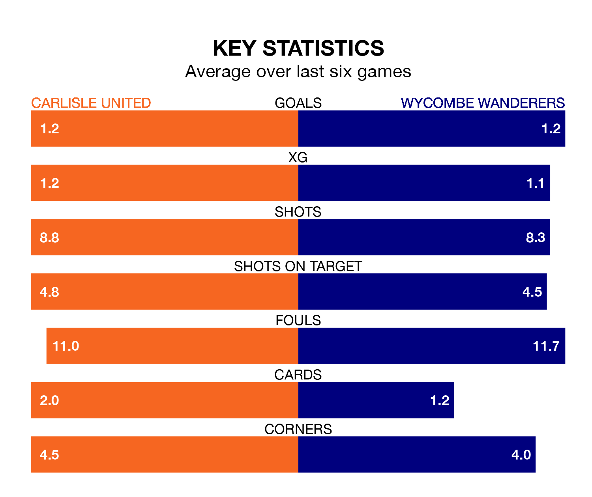

Carlisle United host Wycombe Wanderers on Saturday at Brunton Park in EFL League One.
In their last league match, on April 13, Carlisle lost to Blackpool 1-0 at home.
Wycombe won, 2-1 away at Port Vale on Tuesday, with David Wheeler and Nigel Lonwijk on the scoresheet.
Carlisle are bottom of the table after 44 games, of which they have won seven and drawn nine, earning 30 points.
Wycombe are 11 places ahead of United in 13th, with 15 wins and 13 draws putting them on 58 points.
In the last 10 years, Carlisle and Wycombe have played each other on seven occasions. They won two each, and they drew three times.
On average, Carlisle scored 1.6 goals and the Chairboys 1.7 in those matches.
Their last meeting was on September 30, when Wycombe won 2-0 at home.
With 40 goals in 44 games so far this season, the hosts are scoring at below the league average rate with 0.9 goals per game. And they are conceding more than average, letting in 76 goals at a rate of 1.7 per game.
Wanderers, meanwhile, are average scorers, with 1.3 goals per game. They have conceded 1.2 goals per game.
Carlisle are in mixed form in EFL League One, with two wins and a draw from their last six games.
With three wins and two draws over that period, the Chairboys' form is better – they have taken 11 points from 18, compared to Carlisle's seven.
Updated: 15:40 (UTC), 18/04/24